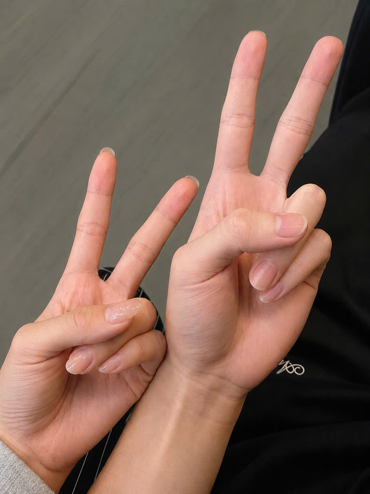

Có những người xuất hiện trong cuộc sống của chúng ta rất tự nhiên.
Có những cuộc gặp gỡ tưởng chừng bình thường,
nhưng lại để lại những cảm xúc mà ta muốn lưu giữ thật lâu.
Một kỷ niệm mà có lẽ tôi sẽ luôn nhớ.
Có những cuộc gặp gỡ tưởng chừng rất bình thường,
nhưng lại để lại những cảm xúc mà ta muốn lưu giữ thật lâu.
Hôm ấy, chúng ta gặp nhau trong một buổi tụ tập cùng mọi người. Giữa không khí rôm rả của bàn nhậu, những câu chuyện cứ thế nối tiếp nhau. Còn chúng ta, khi ấy vẫn chỉ là hai người xa lạ, đôi ba câu chào hỏi rồi lại hòa mình vào cuộc vui chung.
Khi ấy, có lẽ chẳng ai trong chúng ta nghĩ rằng một cuộc gặp gỡ bình thường như vậy lại có thể mở đầu cho nhiều câu chuyện và những kỷ niệm đáng nhớ về sau.
Thậm chí, sau buổi gặp hôm ấy, tôi cũng chưa từng nghĩ mình sẽ chủ động nhắn tin hay tìm cách làm quen với em.
“Có những cuộc gặp gỡ ban đầu tưởng chừng rất bình thường, nhưng sau này khi nhìn lại, ta mới nhận ra mình đã có thêm một kỷ niệm thật đẹp.”

Mấy ngày sau hôm đó, em đã rủ tôi đi Vũng Tàu.
Đó là một buổi tối thật dễ chịu – được cùng em lượn xe qua những con đường biển lộng gió, ngắm phố xá về đêm rồi ghé lại uống một ly nước.
Có thể với em, đó chỉ đơn giản là một buổi đi lượn lòng vòng cho vui.
Nhưng với tôi, buổi tối hôm ấy lại trở thành một kỷ niệm thật bình yên và đáng nhớ.
“Có lẽ điều khiến tôi nhớ nhất không phải là chúng ta đã đi đâu hay ở bên nhau bao lâu, mà là cảm giác bình yên trong những khoảnh khắc giản dị ấy. Chỉ đơn giản là được cùng em dạo phố, ngắm biển và ngồi lại bên nhau, vậy mà cũng đủ để trở thành một kỷ niệm mà tôi muốn giữ mãi.”
Khoảnh khắc cùng em giơ tay chụp lại bức hình kỷ niệm duy nhất ấy, thật ra có những điều tôi chưa từng nói ra:
Nhưng đôi khi, hai ngón tay ấy cũng chẳng cần nói gì nhiều. Chỉ đơn giản là một cái giơ tay lên, như một lời chào dành cho người vừa xuất hiện, và cũng là lời tạm biệt dành cho người sắp rời đi.
Có những lời chào mở đầu một câu chuyện. Cũng có những lời chào trở thành một kỷ niệm mà sau này ta vẫn muốn nhớ về.
Và nếu em còn nhớ hai ngón tay trong bức ảnh hôm ấy, thì hãy hiểu rằng…
“Đó là lời chào vì tôi đã từng rất vui khi gặp em,
cũng là lời chúc mong em luôn bình yên và gặp thật nhiều điều tốt đẹp trên chặng đường phía trước.”
Thật lòng mà nói, ban đầu tôi cũng chẳng có ý định sẽ nhắn tin hay chủ động hỏi han em nhiều đến vậy.
Thỉnh thoảng, trong những câu chuyện của các chị, tôi lại nghe thấy tên em. Cứ nghĩ em cũng là một người chị như mọi người nên tôi chẳng mấy bận tâm. Chỉ là nghe nhắc đến em đôi lần, tôi cũng dần có chút tò mò về cô gái ấy.
Rồi đến khi em chủ động rủ tôi đi chơi, tôi lại ngập ngừng, chẳng biết phải trả lời thế nào. Không phải vì tôi không muốn đi, mà bởi trong lòng vẫn có một nỗi băn khoăn mà tôi chưa biết phải nói ra sao.
Ngay từ những ngày đầu gặp em, tôi đã nghĩ đến chuyện có thể mình sẽ phải trở về Bắc bất cứ lúc nào. Tôi không biết mọi chuyện rồi sẽ thế nào, cũng không muốn vì những cảm xúc của riêng mình mà khiến em phải chờ đợi hay đặt hy vọng vào một điều chưa chắc chắn.
Có lẽ vì vậy mà đôi khi tôi đã có những chút ngập ngừng, dù thật lòng tôi vẫn muốn được gần em hơn.
Thế rồi chẳng hiểu bằng cách nào, từ hai người mới chỉ quen biết nhau, chúng ta lại dần trở thành hai người ngày nào cũng trò chuyện, hỏi han và chia sẻ với nhau đủ thứ chuyện.
Có những câu chuyện tưởng chừng chẳng có gì quan trọng, nhưng lại trở thành thói quen lúc nào không hay. Một ngày không nói chuyện dường như cũng thấy thiếu đi điều gì đó.
Và rồi, tối hôm ấy, chúng ta đã có một cuộc trò chuyện thật khác. Không còn chỉ là những câu chuyện thường ngày, những lời hỏi han vu vơ, mà là lúc cả hai có thể thoải mái chia sẻ những suy nghĩ, những tâm tư và cả những điều vốn chẳng dễ dàng nói ra.
Tôi không biết sau này mọi chuyện sẽ đi về đâu. Chỉ là khi nghĩ đến việc mỗi người có thể sẽ trở lại với cuộc sống và những hành trình riêng, tôi chợt nhận ra mình sẽ nhớ những cuộc trò chuyện bình thường ấy nhiều hơn mình nghĩ.
Nếu đúng là như vậy, tôi vẫn muốn cảm ơn em.
Cảm ơn vì đã đến, vì đã chủ động, vì đã dành thời gian và vì đã khiến những ngày bình thường của tôi trở nên đặc biệt hơn.
Tôi chỉ nghĩ rằng, có những điều dù không thể nói ra trực tiếp, nhưng vẫn xứng đáng được gửi gắm bằng một lời cảm ơn.
Tôi không biết đối với em, khoảng thời gian vừa qua có ý nghĩa như thế nào. Nhưng với tôi, đó thực sự là những ngày tháng đáng nhớ. Cảm ơn em vì đã chủ động, vì những cuộc trò chuyện, những lần gặp gỡ và cả những điều nhỏ bé mà có lẽ em chẳng hề để ý.
Tôi không mong em phải nhớ mãi những điều này, cũng chẳng mong em phải đáp lại điều gì. Tôi chỉ muốn em biết rằng, đã từng có một người thật lòng cảm thấy vui vì được gặp em.
Và dù sau này mỗi người có đi trên một hành trình khác nhau, tôi vẫn sẽ nhớ về khoảng thời gian ấy bằng tất cả sự trân trọng.
“Dù sau này mỗi người sẽ có những hành trình riêng, tôi vẫn muốn cảm ơn em vì đã từng xuất hiện trong một đoạn thanh xuân của tôi.”
Mong em luôn vui vẻ, bình an và gặp thật nhiều điều tốt đẹp.